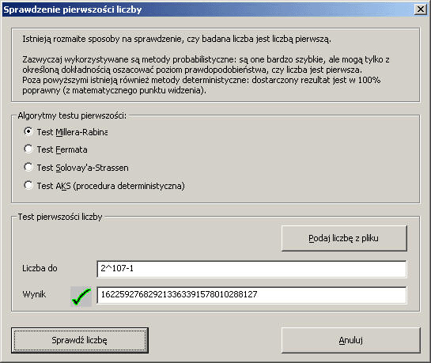

Uruchamiamy to okno klikaj¹c w menu kolejno: Algorytmy \ Kryptosystem RSA \ Test pierwszoœci.
Liczba pierwsza jest liczb¹ wiêksz¹ od 1 dziel¹c¹ siê tylko przez 1 oraz sam¹ siebie. Liczby pierwsze odgrywaj¹ wa¿n¹ rolê w kryptografii. W oknie dialogowym "sprawdzanie pierwszoœci liczb" mo¿na okreœliæ czy badana przez nas liczba rzeczywiœci jest liczb¹ pierwsz¹:

Po klikniêciu na przycisk "SprawdŸ liczbê" liczba w polu "liczba do" zostanie poddana testowi na pierwszoœæ.
Obecnie obs³ugiwane s¹ jedynie dodatnie liczby o maksymalnej d³ugoœci 8192 bitów. Odpowiada to liczbie dziesiêtnej z³o¿onej z maksymalnie 2466 cyfr.
Algorytmy które mog¹ zostaæ wybrane do przeprowadzenia testu pierwszoœci:
Poni¿sza tabela reprezentuje sekundowy czas trwania poszczególnych testów dla ró¿nych danych wejœciowych. Czas tych pomiarów by³ mierzony na komputerze PC wyposa¿onym w procesor Intel Pentium-4 2 GHz.
| Liczba pierwsza | Miller-Rabin | Fermat | Solovay-Strassen | AKS |
|---|---|---|---|---|
| 7309 | 0,01s | 0,01s | 0,01s | 12,34s |
| 9004097 | 0,01s | 0,01s | 0,01s | 23:22,55s |
| 2^31-1 | 0,01s | 0,01s | 0,01s | 6:03:14,36s |
| 2^607-1 | 0,61s | 0,61s | 1,62s | k.A. |
Tabela: Czas trwania algorytmów wyra¿ony w sekundach.
Przycisk "Podaj liczbê z pliku" pozwala na wczytanie odpowiedniej liczby z pliku tekstowego. Plik ten musi zawieraæ pojedyncz¹ liczbê bez jakiegokolwiek tekstu. Bia³e znaki bêd¹ automatycznie usuwane podczas wczytywania danych.
Kompletne informacje odnoœnie testu pierwszoœci mo¿na znaleŸæ w skrypcie.
[1] Agrawal, Kayal, Saxena, "PRIMES is in P", 2002, v6